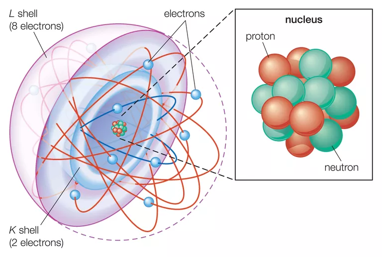

<!--
@license
Copyright (c) 2016 The Polymer Project Authors. All rights reserved.
This code may only be used under the BSD style license found at http://polymer.github.io/LICENSE.txt
The complete set of authors may be found at http://polymer.github.io/AUTHORS.txt
The complete set of contributors may be found at http://polymer.github.io/CONTRIBUTORS.txt
Code distributed by Google as part of the polymer project is also
subject to an additional IP rights grant found at http://polymer.github.io/PATENTS.txt
-->

<link rel="import" href="../bower_components/polymer/polymer-element.html">
<link rel="import" href="../bower_components/paper-card/paper-card.html">
<link rel="import" href="../bower_components/iron-flex-layout/iron-flex-layout-classes.html">
<link rel="import" href="shared-styles.html">

<dom-module id="my-view8">
  <template>
    <style include="shared-styles">
		:host {
			display: block;
			padding: 10px;
		}	
	  
		.flex {
			@apply --layout-vertical;
			@apply --layout-wrap;
		}
		
		.card{			
			margin: 10px;
		}
		
		.red{
			background: red;
			color: white;
		}
		
		.blue{
			background: blue;
			color: white;
		}
    </style>

    <div class="card">
		<h1>Basic Model of the Atom</h1>
		<div class="card-content flex">
			
			<hr>
			<p>
			All matter consists of particles called atoms. Atoms bond to each other to form elements, which contain only one kind of atom. Atoms of different elements form compounds, molecules, and objects.
			<br>
			<br>
			Parts of an Atom<br>
			Atoms consist of three parts:<br>
			Protons: Protons are the basis of atoms. While an atom can gain or lose neutrons and electrons, its identity is tied to the number of protons. The symbol for proton number is the capital letter Z.<br>
			Neutrons: The number of neutrons in an atom is indicated by the letter N. The atomic mass of an atom is the sum of its protons and neutrons or Z + N. The strong nuclear force binds protons and neutrons together to form the nucleus of an atom.<br>
			Electrons: Electrons are much smaller than protons or neutrons and orbit around them.<br>
			</p>
		</div>
    </div>
  </template>

  <script>
    class MyView8 extends Polymer.Element {
      static get is() { return 'my-view8'; }
    }

    window.customElements.define(MyView8.is, MyView8);
  </script>
</dom-module>
